Diallels are not the only way to estimate genetic variances. Comstock and Robinson’s North Carolina designs, Kearsey and Jinks’s triple test cross, line × tester and partial diallels organize the crosses differently, almost always to evaluate more families with less work. Block 6 analyzes the six designs with a single engine: it computes the expected mean squares of the actual experiment, chooses what to test each source against and converts the components into σ²A, σ²D and heritabilities.
All these designs rest on the same principle: relatives resemble each other in proportion to the genes they share. Half sibs (one parent in common) share a quarter of the additive variance; full sibs, half of the additive variance and a quarter of the dominance variance. Each design organizes the crosses so that the analysis of variance separates those two covariances.
| Design | How the crosses are made | Estimates | Example |
|---|---|---|---|
| North Carolina I | Each male with several females of its own (nested) | σ²A from the males; σ²D from the females within males | 2 sets × 3 males × 2 females |
| North Carolina II | Every male with every female of its set (factorial) | σ²A from males and from females; σ²D from their interaction | potato: 2 sets of 5 × 5 |
| North Carolina III | Each F2 plant with the two parents of the F1 | σ²A from the sums; σ²D from the differences | 16 F2 plants in 4 sets |
| Triple test cross | Like design III, plus the F1 as a third tester | The same and, in addition, epistasis | simulated: 30 F2 plants |
| Line × tester | Each line with each tester; optionally, the parents | GCA of lines and testers; SCA; heterosis | 5 lines × 3 testers |
| Partial diallel | Each parent with s of the others (circulant) | GCA and SCA as in a diallel, with fewer crosses | maize: 8 lines, s = 5 |
Block 3 recognizes the design and decides which column is the female, the male, the tester or the F2 plant. If the data come from none of these designs, card 1 says where they are analyzed: complete diallels in Blocks 4 and 5; generations in Block 7.
The card 1 · Data and model takes the plot values from Block 3 (with the field analysis that matches the design and any observations you excluded), summarizes the experiment in one line and gives the main results in tiles. The table What the design assumes, below, says what each design assumes and what happens if the assumption fails.
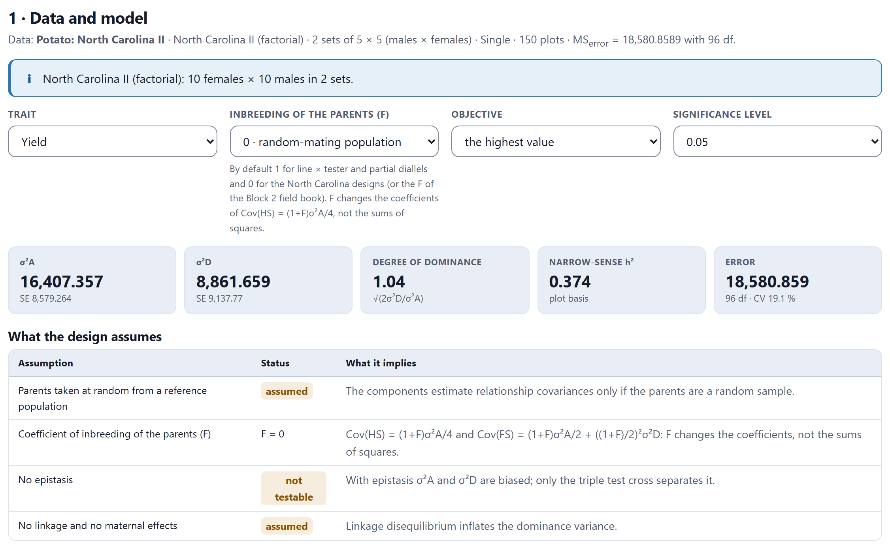
| Control | What it is for |
|---|---|
| Trait | The whole block is recomputed for the chosen trait. |
| Environment | With several environments, one of them or all together, which adds the environments and their interactions to the model (Section 6.10). |
| Inbreeding of the parents (F) | 0, 0.5, 0.75 or 1. By default, 1 for line × tester and partial diallels (inbred lines) and 0 for the North Carolina designs and the triple test cross (plants from a population); if the Block 2 field book declared another value, that one is used. F changes the coefficients of the covariances, not the sums of squares. |
| F₁ tester (L₃) | Only in the triple test cross: which of the three testers is the F1 of the other two. The app guesses it from the name. |
| Objective · Significance level | The favorable direction for ranking heterosis, and the level of the tests. |
With the same mean squares, σ²A = 4Cov(HS)/(1 + F) and σ²D = 4σ²SCA/(1 + F)². Going from F = 0 to F = 1 divides σ²A by 2 and σ²D by 4. In the line × tester example, with F = 0 σ²D would be 1679 and the degree of dominance 8.76; with F = 1, which is correct for inbred lines, σ²D = 420 and the degree of dominance 6.19. Always check this control.
The card 2 · Analysis of variance of the mating design fits the model of the design to the plot values: the field strata (sets, replications, blocks) and the partition of the entries specific to each design. Besides df, sums of squares and mean squares, the table gives the expected mean square of each source, what it is tested against and its p value.
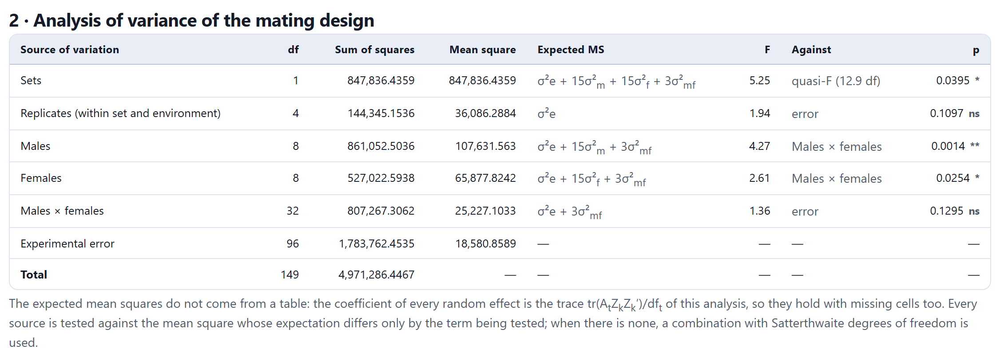
Textbooks give tables of expected mean squares for each balanced design. Block 6 computes them for the experiment you have: the coefficient of each variance in the mean square of each source is a trace, tr(AtZkZk′)/dft, obtained by fitting each column of random effects as if it were the response. With balanced data it reproduces the textbook coefficients (in Figure 6.2, 15 = r·f and 3 = r); with missing crosses or unequal replications the coefficients stop being integers and remain exact. Each source is tested against the mean square whose expectation differs only in the term being tested; if there is none, against a combination of mean squares with Satterthwaite degrees of freedom (quasi-F).
Below the table, the figure Contribution of every source shows what part of the variation between entries corresponds to each term of the mating design.
The card 3 · Effects of parents and crosses estimates the effect of each parent (its general combining ability) and that of each cross (the specific one), with its standard error and its t test. In the North Carolina II, males and females have their own table and the interaction another, plus a dot plot of the general effects and a color matrix of the interaction, set by set.
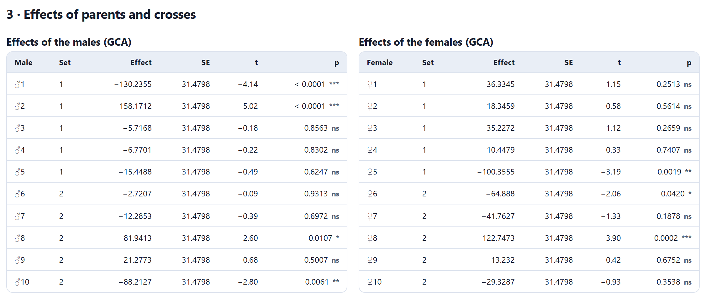
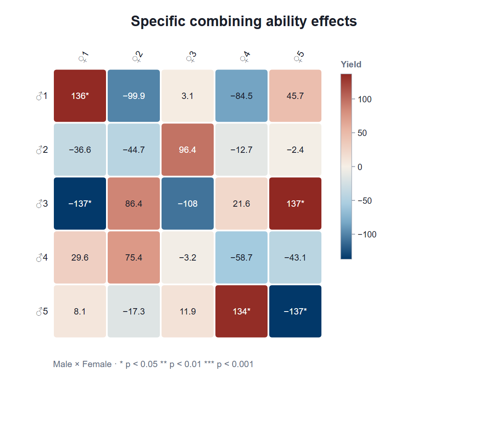
The effects are estimated by least squares with the restrictions of the model (the effects in each set sum to zero), so their standard error is that of the full contrast: for a line, σ²(1/rt − 1/rlt) and not σ²/rt, as some textbooks print. In line × tester, the standard error of a line GCA is 2.464, not 2.755.
The card 4 · Variance components and genetic parameters solves for the components from the expected mean squares (on the left) and converts them into covariances of relatives, σ²A, σ²D, degree of dominance and heritabilities (on the right). Each component is a combination of mean squares, so its standard error comes from them: Var(ΣciMi) = Σci²·2Mi²/dfi.
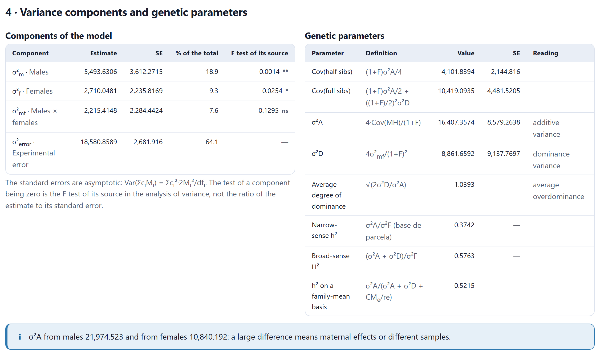
In the potato data, σ²A = 16,407 ± 8579 and σ²D = 8862 ± 9138, with an average degree of dominance of 1.04 and a heritability of 0.37 on a plot basis and 0.52 on a family-mean basis. The North Carolina II gives two estimates of σ²A, one from the males (21,975) and another from the females (10,840), and the app averages them; when they differ a lot, as here, think of maternal effects or of males and females not coming from the same population.
A negative component is reported as obtained: it usually indicates that the true variance is close to zero or that there are few replications. A negative σ²D is taken as zero in the denominator of narrow-sense h², and with it the degree of dominance, H² and the Baker ratio are not computed; with a negative σ²A no heritability is computed. The card’s warning explains it each time.
In the nested design each male is crossed with females that are not crossed with any other male. The variance among males is the half-sib covariance, and that of females within males is the full-sib covariance minus the half-sib one: σ²A = 4σ²m/(1 + F) and σ²D = 4(σ²f − σ²m)/(1 + F)². Males are tested against females within males, and the latter against the error.
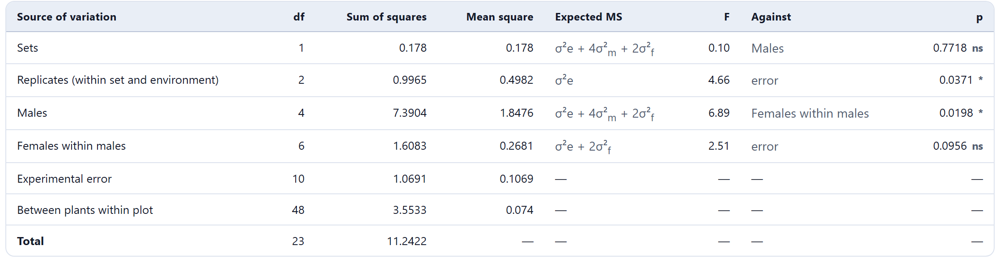
In the example the males differ (F = 6.89, p = 0.020), but the females within males do not (p = 0.096), and σ²D comes out negative (−1.26 ± 1.39): with six males and two females per male, dominance cannot be estimated well. The assumptions table recalls a limitation of the design itself: because each female has only one male, maternal effects stay inside the female component and overestimate σ²D when they exist. With per-plant data, heritability is also given on a plant basis, separating the sampling error among plants from the plot error.
In the North Carolina III each F2 plant is crossed with the two parents of the F1, L1 and L2. For each plant, the sum of its two crosses reflects its additive value and the difference, its dominance: the variance of the sums estimates σ²A and that of the differences, 2σ²D, both after subtracting the error of a pair (Comstock and Robinson, 1952). The triple test cross adds the F1 as a third tester, L3, and the contrast L1 + L2 − 2L3, which equals zero if there is no epistasis (Kearsey and Jinks, 1968).
A locus of the F2 crossed with the two parents gives differences a − d, a and a + d with frequencies ¼, ½ and ¼, so the variance of the differences is H/2 = 2σ²D. The correlation between sums and differences tells you toward which parent dominance goes. In the triple test cross, the mean of the contrast L1 + L2 − 2L3 tests overall epistasis (type i) and its variation among individuals, epistasis of types j and l.
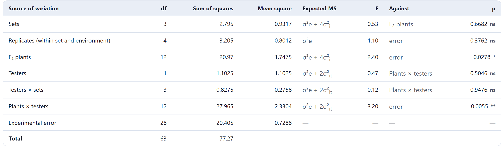
The testers are two fixed lines, not a sample, so the interaction of each plant with them does not enter the expected mean square of the plants (Comstock and Robinson’s restricted model). That is why the plants are tested against the error (F = 2.40, p = 0.028), and the plant component, 0.255, is exactly σ²A/4 = 1.019/4. The plants × testers interaction is significant (p = 0.006): there is dominance, with σ²D = 0.80 ± 0.49 and a degree of dominance of 1.25.
The card 5 · Sums, differences and epistasis brings those computations together. With the simulated triple test cross from the example gallery —eight loci without epistasis, D = 11.52 and H = 8 (σ²A = 5.76, σ²D = 2)—, the block estimates σ²A = 4.97 ± 2.20 and σ²D = 1.86 ± 0.94, with a degree of dominance of 0.87 (true value, 0.83).
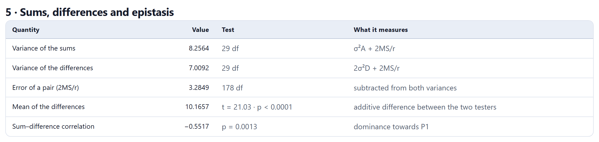
The epistasis contrast makes sense only if L3 is the F1 of L1 and L2. The app orders the testers by name (the F1 last); if the names do not say so, choose the right one in F₁ tester (L₃). With the wrong order, data without epistasis would show it as highly significant.
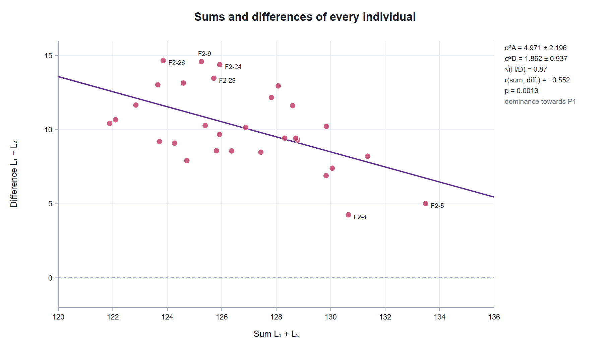
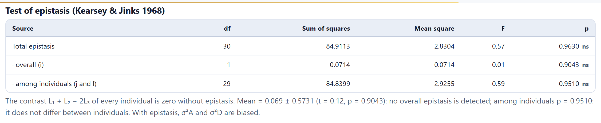
Line × tester (Kempthorne, 1957) crosses each line with a few testers. If the parents were also evaluated, the entries are split into parents, crosses and the contrast between both groups; the crosses, into lines, testers and their interaction. The GCA of lines and testers comes from their effects, and the SCA from the interaction.
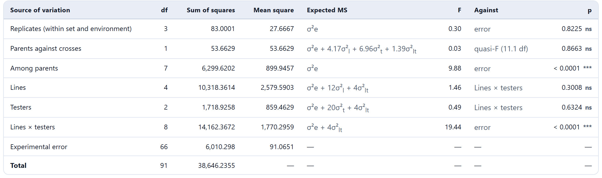
In the example, the lines differ in their GCA (L3, with +23.8, is the best; L4, with −13.9, the worst) and so do two testers (T7, +6.4; T8, −6.7), but with five lines and three testers their variances do not reach significance against the interaction, which dominates. The tester variance comes out negative, and σ²A, computed from the average of the line and tester variances, ends up at 21.9 ± 197: almost all the variation among crosses is specific. The warning in card 4 explains why: a few testers chosen on purpose do not estimate the half-sib covariance of a population.
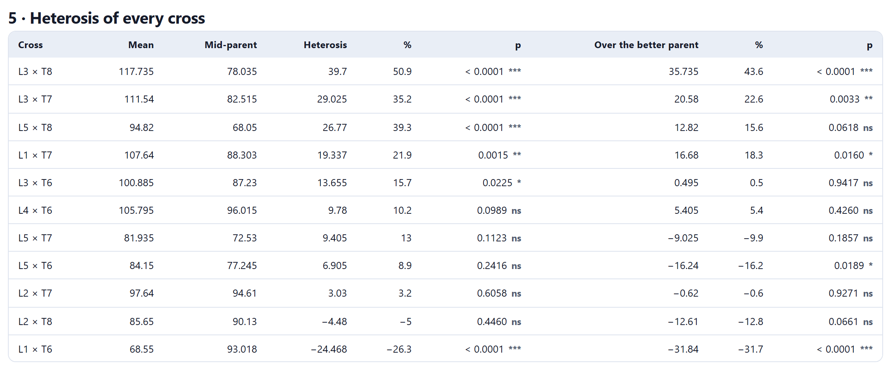
In a partial diallel each parent is crossed with s of the others, usually in the circulant order of Kempthorne and Curnow (1961) that Block 2 prepares. Block 6 fits yij = μ + gi + gj + sij by least squares on the crosses that were made, so it works for the circulant arrangement and for any incomplete set of crosses, and it gives the GCA of each parent and the SCA of each cross as in a Method 4 diallel.
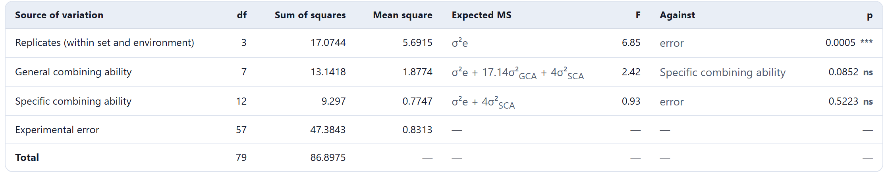
Here neither GCA (p = 0.085) nor SCA (p = 0.52) is significant as a whole, although two lines stand out: line 2 (ĝ = +0.59, p = 0.009) and line 7 (ĝ = −0.49, p = 0.028). σ²SCA comes out negative, so there is no Baker ratio or degree of dominance; with F = 1, σ²A = 0.13 ± 0.12 and the heritability is 0.13 on a plot basis.
With data from several environments, the Environment menu lets you analyze one of them or all together. In the second case the model adds the environments and the interaction of each genetic term with them (males × environments, females × environments, lines × testers × environments…), and the expected mean squares and the tests are recomputed by traces for that model; σ²A and σ²D then discount their interaction with the environments.
The card 6 · Assumptions, formulas and references summarizes the model and formulas of each design with their references. Results (.xlsx) downloads the analysis of variance, the components, the parameters, the effects and, depending on the design, the sums and differences or the heterosis. Each figure has its own download panel.
The Continue button takes you to Block 8 (genetic parameters, correlations and selection indices among the families) or, with several environments, to Block 9 (genotype × environment). ← Data goes back to Block 3.